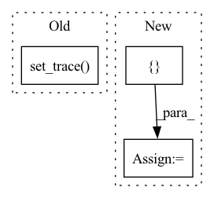

Pattern ID :27716
Before Change
flip_prob = torch.FloatTensor(x.shape[0], 1).uniform_(0.0, 1.0)
flip_mask = flip_prob < p
flip_mask = flip_mask.type(torch.bool).to(x.device)
import pdb; pdb.set_trace()
def random_translation(x, ratio):
max_t_x, max_t_y = int(x.shape[2]*ratio), int(x.shape[3]*ratio)After Change
flip_prob = torch.FloatTensor(n, 1).uniform_(0.0, 1.0)
flip_mask = flip_prob < p
flip_mask = flip_mask.type(torch.bool).view(n, 1, 1, 1).repeat(1, c, h, w).to(x.device)
x[flip_mask] = torch.flip(x[flip_mask].view(-1, c, h, w), [ 3In pattern: SUPERPATTERN
Frequency: 3
Non-data size: 3
Instances Fragment ID: 82198490
Project Name: postech-cvlab/pytorch-studiogan
Commit Name: 8c7aa6d098bb486d361c49f6fa28d42399f54503
Time: 2020-08-23
Author: first287@naver.com
File Name: utils/icr.py
M Class Name: AnonimousClass
N Class Name: AnonimousClass
M Method Name: random_flip(2)
N Method Name: random_flip(2)
M Parent Class:
N Parent Class:
M File Name: utils/icr.py
N File Name: utils/icr.py
M Start Line: 18
M End Line: 21
N Start Line: 25
N End Line: 30
Before Change
self.geno_count = Counter()
def search(self):
pdb.set_trace()
print("Searching starts:")
start_time = time.time()
for epoch in range(self.config["search"]["epochs"]):
self.epoch += epochAfter Change
self.history["val_loss"].append(val_loss)
// Save what the current epoch ends up with.
state_dicts = {
"epoch": self.epoch,
"geno_count": self.geno_count,
"history": self.history,
"model_param": self.model.state_dict(),
"optim_shell": self.optim_shell.state_dict(),
"optim_kernel": self.optim_kernel.state_dict(),
"scheduler": self.kernel_lr_scheduler.state_dict()
}
torch.save(state_dicts, self.save_path)
self.epoch += 1
return self.geno_count.most_common(1) Fragment ID: 82198491
Project Name: woodywff/nas_3d_unet
Commit Name: 483c269d68b745c65d71e2a8566c35bd92e0b584
Time: 2020-03-23
Author: woodywff@aliyun.com
File Name: search.py
M Class Name: Searching
N Class Name: Searching
M Method Name: search(1)
N Method Name: search(1)
M Parent Class:
N Parent Class:
M File Name: search.py
N File Name: search.py
M Start Line: 103
M End Line: 132
N Start Line: 104
N End Line: 130
Before Change
return (input - self.bias) * self.scale
def objective_function(self, sample):
import pdb; pdb.set_trace()
sample = self.input_trans(sample)
epoch = []
for i in range(sample.shape[0]):
self.epoch_recoder[i, int(sample[i])] += 1After Change
return (input - self.bias) * self.scale
def objective_function(self, sample):
_sample = []
for i in sample:
_sample.append(np.argmax(i))
sample = np.array(_sample)
sample = self.input_trans(sample)
epoch = []
for i in range(sample.shape[0]): Fragment ID: 82198488
Project Name: mac-automl/xnas
Commit Name: 973f1083e42beb29447faf525329ba2f31bf2ce7
Time: 2020-07-24
Author: zhengxiawu@126.com
File Name: xnas/search_space/test_function.py
M Class Name: EpochSumCategoryTestFunction
N Class Name: EpochSumCategoryTestFunction
M Method Name: objective_function(2)
N Method Name: objective_function(2)
M Parent Class: TestFunction
N Parent Class: TestFunction
M File Name: xnas/search_space/test_function.py
N File Name: xnas/search_space/test_function.py
M Start Line: 84
M End Line: 84
N Start Line: 84
N End Line: 87